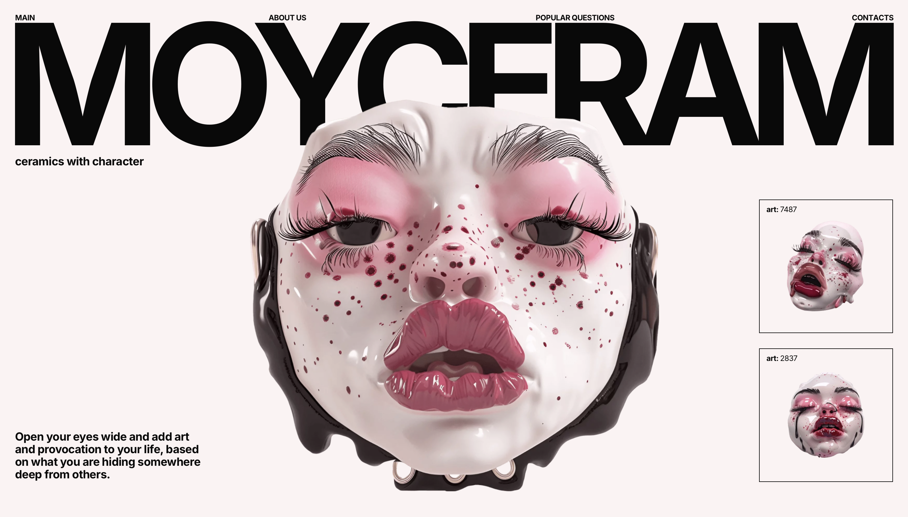

Aquí encontramos la primera web visitada de la página Psicotropia

Moyceram no solo me ha llamado por su característica y peculiar estética,
sino también por las pequeñas interacciones que realiza la página web.
El juego de esta página web se ve concentrado en las interacciones tipográficas.
En este caso, el menú de opciones se encuentra posicionado en cada una de las letras del título de la página web.
Estas tienen una interacción al pasar el ratón por cada una de las palabras